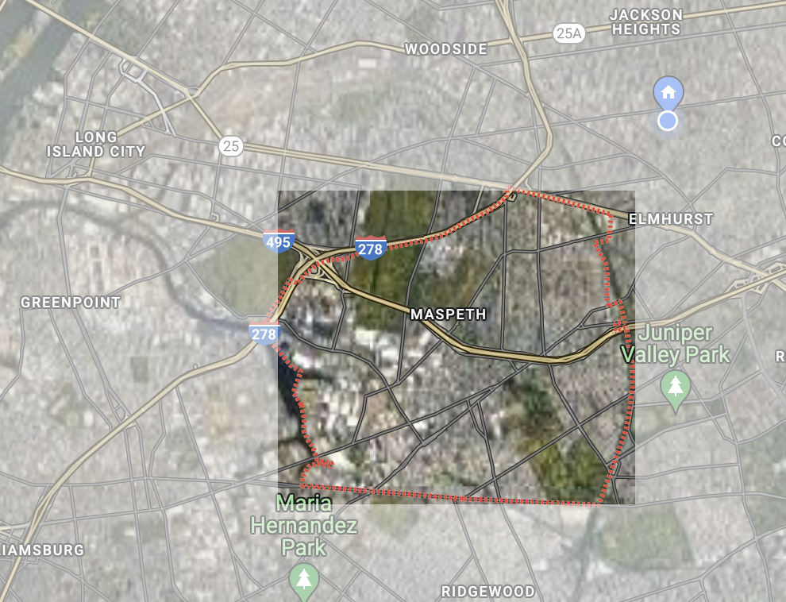
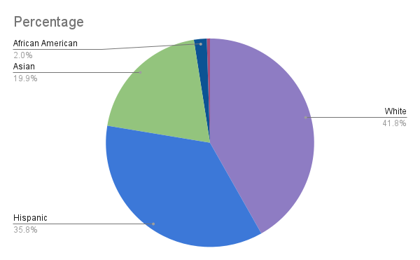

Maspeth is a neighborhood in Queens, New York and is composed of the zip code 11378 and located in Queens Community District 5. With a population of around 38,524, Maspeth is a neighborhood that is mainly residential. The poverty level in Maspeth is about 8%, with about 10% of the population under 18 identifying as “poor.” This is something to note as the education levels are quite low, with only 24.82% of individuals noting that they completed “some college-level education.” Most of the population, around 35%, identified to have completed high school.
When assessing a neighborhood, the key elements that should be considered include Crime/Safety, Affordability, and Diversity. The neighborhoods in Queens that we chose have similarities in regards to the diversity ranking with each neighborhood scoring between the A/A+ range. In addition, Jamaica, Maspeth, and Whitestone have similar rankings in their affordability. The median cost for a home in Jamaica is $590,000. The median cost for a home in Maspeth is $581,000. The median cost of a home in Bayside is $860,000. The median cost for a home in Whitestone is $505,000. The cost of living in Bayside is drastically higher due to differences in the cost of housing.These neighborhoods differ in their crime/safety. For the sake of this assessment, affordability would be the most significant ranking quality. Although diversity allows people to feel more included and comfortable, and lower crime rates make people feel safe, affordability takes precedence. The financial burden of expensive housing can lead to homelessness, debt, etc. These rankings should indicate how attractive these neighborhoods may be to a potential homeowner or renter.
As more apartments are occupied in Manhattan, many are moving to other boroughs and into other neighborhoods like Maspeth. Just in the last year, Maspeth had an apartment search increase. A main contributor to this change was people deterring from the $4000+ per month price tag from an apartment in Manhattan, such as those in the East Side and SoHo. However, in retrospect, the rent price in Maspeth has increased. Comparing year to year, rent prices in Maspeth had a 9% increase. Currently, the average price for a one bedroom apartment is $1,800. Though the one bedroom apartment price is slightly cheaper than rent in NYC overall (which averages at around $4,200), realistically, the majority of renters in Maspeth are individuals with families. According to Zillow, a 2 or more bedroom apartment is around $2,500+ per month which is way more than most families could afford if considering the 19% poverty rate present. The price for an apartment might not be much for an individual who had previously resided in Manhattan, but it is for an individual who is local to the area and raising a family.
Given that Maspeth is a very residential area, it has a house occupancy rate of 91.45%, with only 8.55% of house vacancy. Half of the residents in Maspeth own their own house with 51.55% of homes being owner occupied and the lesser 48.45% being renter occupied. Most homes were made during the 1950’s and were constructed as multi-units so it can hold the most amount of residents. These multi unit homes are ideal for families looking for a place to rent with one family taking one floor and another family taking another. With most structures being houses, Maspeth has a suburban feeling within a big city.